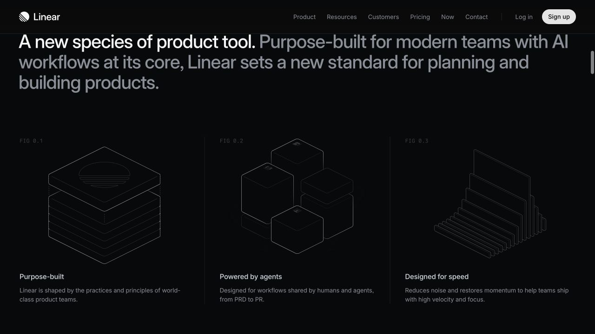

Your next action first.
Your work, visibly accumulating.
A planning review, not the new product interface. Scope is approved; exact graphics, placement and progress rules still need decisions.
The journey we are defining
Explore the intended states
These controls switch requirement summaries, not application states.
Next action before everything else
Show the known task, saved return instruction and Resume. The daily route supports this action. No compulsory replanning or AI request.
Check: at phone and desktop size, a returning user can locate the actual next move before exploring scenery.
Start with your own plan, or ask for help
Enter a goal and editable steps manually. Compact importance/category inputs are requested for later recommendations. AI is an optional source of suggestions. Retain the draft on failure and allow correction before acceptance.
Open: required fields, direct single-action entry and multi-goal action selection.
A calm commitment cue
Current action, timer and clear Pause/Complete controls. Work can happen in another tab. A slim floating task/timer strip is a conditional enhancement.
Open: +5/+10/+20 minute extensions are requested; expiry presentation still needs review. One completed subtask earns a streak day; further daily completions enrich the icon colour/flame treatment. Missed calendar days stay blank. Three consecutive missed days break the streak; one or two are tolerated. Past work stays visible and returning should feel hopeful. Count display during grace and day-boundary details still need review. No attention measurement.
Stopping takes no explanation
Pause immediately, with an optional “When I'm back…” line and further context if useful. Leave a welcoming invitation to return. Saving the note does not mark the task done.
Check: reload restores the supplied instruction; no note means restore known context without inventing details.
A recognizable piece of work, recorded
A small subtask gets a subtle tick/checkpoint animation. Completing the larger goal gets the major celebration: the light background transitions into purple/blue gradients, congratulatory text changes and gentle background motion accompanies a visible goal/route achievement. Proposed sequence: compact final review, explicit goal confirmation, finite gradient celebration, then a neutral page with a coloured finished-goal block. Timing and final execution remain open.
Open: exact route growth, checkpoint and landmark rules. No automatic whole-goal completion.
Two views of progress
Daily route: the recorded sessions and completed actions behind one day.
Goal landscape: the lasting journey across days toward one meaningful goal.
Confirmed route states: mild glow for a completed subtask; a simple Unfinished tag for an unfinished session. A smooth contour journey is proposed, with exact geometry still awaiting visual review.
One visual discipline
Next-action priority, readable typography, generous but useful spacing, purposeful grouping and restrained motion. Composed mixed gradients and depth concentrate in the record-backed route, milestones, completion effects, streak and finished blocks. Most reading and control surfaces remain neutral. Exact colour compositions need visual review.
The exact look needs representative screen proofs. Reference names alone are insufficient.
Reference evidence
Original desktop captures from the public homepages. These are reference material, not Trail screens. Full audit covers product sections and navigation too.



Decisions before implementation
- Review the graphical direction and exact screen composition.
- Review route geometry/time mapping and landmarks; completed subtasks glow mildly and unfinished sessions carry an Unfinished tag.
- Review the proposed shared palette and final review → celebration → finished-block sequence. No automatic category or mood colours are required.
- Define the importance + time-neglected + remaining-work ranking and relation to chosen work. Important unfinished goals remain eligible after recent effort. Review expiry controls and define streak count during grace and day-boundary details; qualification is one completed subtask and three consecutive missed days break the streak.
- Finalize creation/navigation details and decide which optional extras fit.
Boundary and failure states
No external monitoring, mandatory AI, required pause explanation or attention score. Cover empty days, interrupted sessions, provider failure, blocked storage, Undo, unsupported floating windows and reduced motion. Keep sample records separate.
Automatic return reminders — confirmed refinement
Remind users when important work has been neglected, in morning/daytime, while working in another tab and after Trail closes. Delivery after closure needs infrastructure outside the page. Define neglect threshold, local time/window, repeat limit, opt-in, supported browsers and minimal remote reminder data before building. Permission/support failures need clear states; no phone calls. Quotes remain a separate enhancement.